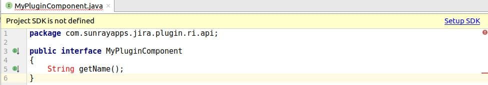
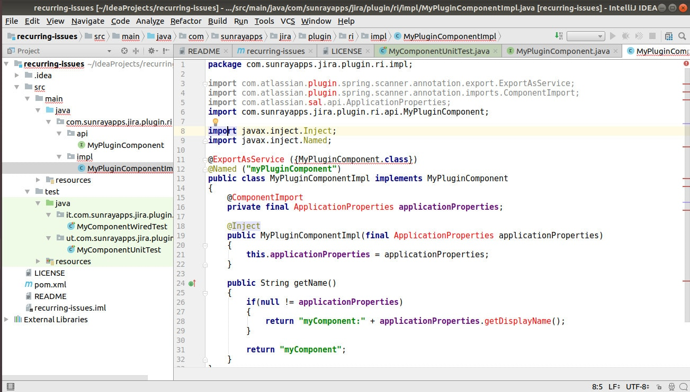

Now, when we have a working project, it is time to see the code like programmers do. The easiest way is to use IDE like IntelliJ. This time we are going to pair IntelliJ with our project.
You can open the plugin the same way you open any maven project (File->Open-> plugin folder name). However, it is not enough. As you can see, IDEA cannot find some dependencies.
If you can see the message as below, it means you have to configure Project SDK.

Click on the Setup SDK link. Either you have to choose one of already configured Java versions or select the folder with the SDK home. We did not configure maven correctly yet.

Do you wonder, why it works from the command line and doesn't work from the IDE? The secret is SDK uses own maven configuration and not your local one. There are a couple of ways to make it work. One is to configure IntelliJ to use the same configuration SDK uses. Another way is to configure the local maven config. I prefer this method because you can use your custom configurations. For example private repositories. Another benefit is that you can also use the standard maven and you don't have to rely on the SDK's version.
First of all type
Look at the output For us the most interesting is the first line. It reveals the path to custom settings.xml file. If you don't have settings.xml file in the ~/.m2 folder you can just copy Atlassian's version.
Otherwise, you should merge your configuration with the new one.
Refresh maven from the IDE. All dependencies should work now.
Explore project files. Next time we are going to describe all the files and customize it.